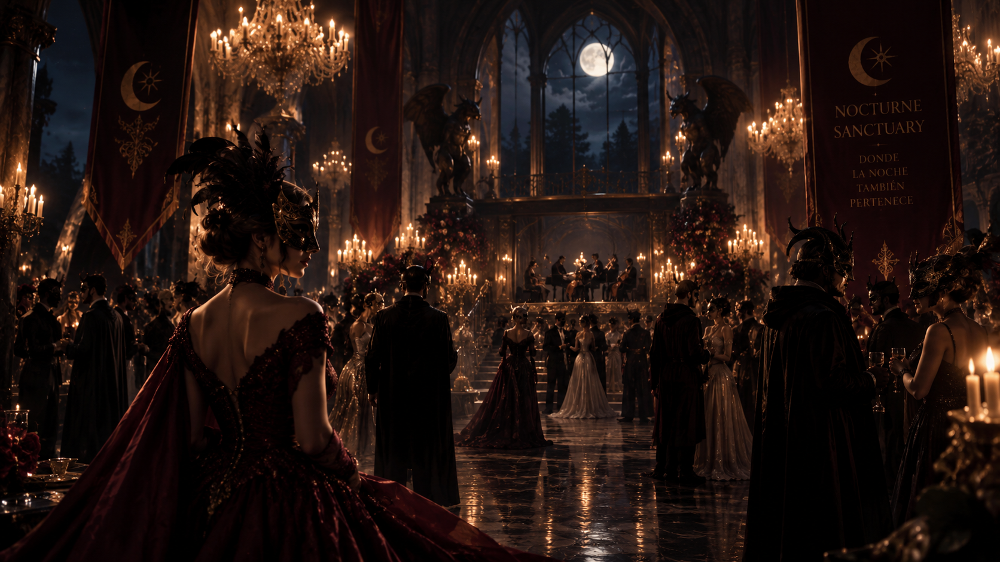

EVENTO DESTACADO
El Gran Baile de Máscaras
Una noche exclusiva de música, máscaras y encuentros entre las criaturas más misteriosas del santuario.
- Acceso exclusivo para huéspedes
- Vestimenta ceremonial
- Servicio nocturno especial
- Evento privado del santuario